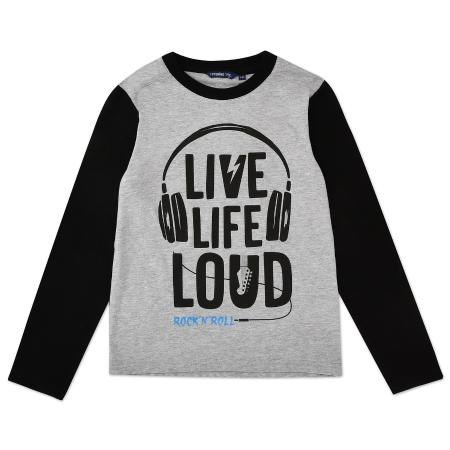

Футболка Futurino с длинным рукавом

Стоимость: 499 руб.
Описание товара
Детям от 7 лет до 12 лет
Серая футболка Futurino с контрастными рукавами украшена крпуным принтом в виде надписи «Live Life Loud».
Характеристики товара
- Код товара: 2037943001sup
- Артикул: ZB 03334-99GG
- Бренд: Futurino
- Страна-производитель: Узбекистан
- Материал: 100% хлопок
- Габариты упаковки: 30 x 5 х 30 см
- Вес упаковки: 0.25 кг.
Подробное описание товара
- Прочный, приятный на ощупь хлопок
- Прямой крой
- Высокая износостойкость
- Круглый вырез
Обращаем Ваше внимание, что правильное определение размера детской одежды напрямую зависит от индивидуальных особенностей ребёнка.